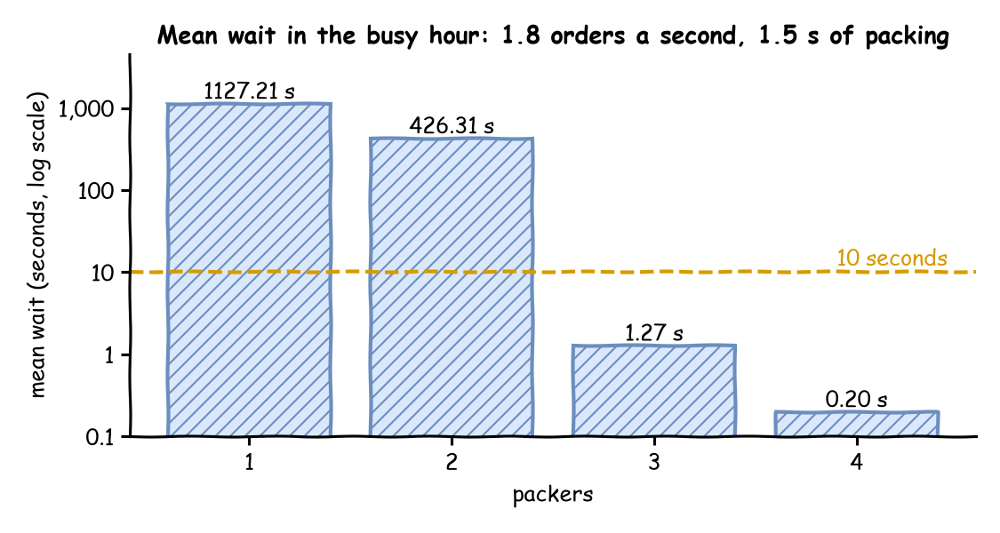

Queues and Capacity
In its busy hour the shop gets 1.8 orders a second, and packing still takes 1.5 seconds. One packer cannot keep up. This page asks: how many packers keep the mean wait under 10 seconds?
- Decision: the number of packers for the busy hour.
- Measures: the packers' utilisation and the mean wait.
- Runs: four runs of the hour, one for each number of packers, each with the seed 42.
- Assumptions: orders arrive at random at a steady rate, and every order takes the same time to pack.
What You Will Learn
This page shows how to:
- work out a resource's utilisation before running the model;
- read the load, the stability and the bottleneck with
desflow explain; - choose the fewest packers that keep the mean wait short.
What You Add
This page adds more orders, then more packers, and desflow explain, which works out the load from the model before it runs. The shop is the one from First Simulation, with the arrival rate of the busy hour and the number of packers as a setting you change between runs.
Work Out the Load
Before running anything, work out how busy the packers would be. Utilisation is the share of time a resource is busy:
utilisation = arrival rate × mean service time ÷ number of units
The load is the part above the division: arrival rate × mean service time. Here it is 1.8 orders a second × 1.5 seconds = 2.7, so each second brings 2.7 seconds of packing, enough work for 2.7 packers. One packer would be busy 270% of the time, which is impossible: it falls further behind with every order.
- With utilisation below 1 a model is stable: the queue rises and falls, but stays bounded.
- At 1 or above it is not: the queue grows for as long as the run lasts, and every order waits longer than the one before.
The shop needs at least 3 packers, the fewest that bring utilisation below 1: 2.7 ÷ 3 = 0.9. Queueing Basics explains utilisation, and why the queue grows without limit at 1 or above. Each resource in a model has its own utilisation. The one with the highest utilisation is the bottleneck: it decides how long everything waits.
Here is the busy hour. The arrival rate is 1.8 orders a second, and until is one hour of simulation time:
spawn="pack_order" starts the task for each arrival, as spawn: does in YAML, so this page needs no @app.arrival_loop.
A blueprint accepts a duration with a unit wherever it takes a time, such as until: 1 h and value: 1.5 s, and reads a plain number as seconds. A text that is a plain number, such as "5" or "1e-3", is read as seconds too. factor: 0 runs the hour unpaced: as fast as the computer can, in about a second. Nobody needs to watch this run in real time.
Explain the Load
desflow explain does this arithmetic from a YAML or builder model, without running it. It reads three numbers for each resource and works out the fourth:
- λ (lambda), the arrival rate:
rate: 1.8ofarrivals.orders; - μ (mu), the service rate, one over the mean service time:
value: 1.5 sofservices.packinggives 1 ÷ 1.5 = 0.667 orders a second for each packer, one order every 1.5 seconds (40 a minute); - c, the number of units:
current_capofresources.packers; - ρ (rho), the utilisation: λ ÷ (c × μ).
Save the files from Full Files in one folder and run the commands there.
The file is queues_and_capacity.yaml from Full Files. Its number of packers comes from the variable PACKERS, which Run It With More Packers sets. With PACKERS not set, the shop has one packer.
| docs/snippets/tutorials/queues_and_capacity.py:explain | |
|---|---|
context.analyze() returns the same analysis as an Explanation, and render_terminal prints it as the command does. desflow explain also loads a builder Python file that defines a SimulationContext at module level.
desflow explain does not support low-level models. It reads which arrival starts which task and which resource each task uses, and a low-level model does not declare those links: its SimPy code makes them as it runs.
For a YAML or builder model, it prints the graph from each arrival, the resources, the utilisation at each number of units the resource allows, and hints:
The output has four parts:
- The tree shows each order starting
pack_order, which usespackers, and the flow ending after it. - The resources table gives λ (the arrival rate) 1.8 orders a second, μ (the rate one packer serves) 0.667 orders a second, c (the number of packers) 1 and utilisation ρ 2.7. The status is
CONGESTEDfrom utilisation 0.85 andUNSTABLEfrom 1, so it isUNSTABLE. The wait (Wq) and the number in the shop (L) are left blank, and the reason is printed below the tables: the queue grows for as long as the run lasts. - The table by units covers 1 to 10 packers, up to
max_cap. Three packers are stable but congested at utilisation 0.9. - The first hint names 4 as the fewest packers at or below 0.85. The second hint keeps the current number of units. It gives the rate of requests into the resource at which utilisation reaches the target. With one packer, an arrival rate of 0.5667 orders a second, an order every 1.76 seconds (34 a minute), gives utilisation 0.85. In a network, that rate includes the requests that come back for rework, not only new arrivals.
Run It With More Packers
The number of packers is the resource's current_cap. Each run sets it once:
| docs/snippets/yaml/queues_and_capacity.yaml:packers | |
|---|---|
${PACKERS:-1} reads the environment variable PACKERS, and uses 1 when it is not set.
| docs/snippets/tutorials/queues_and_capacity.py:packers | |
|---|---|
| docs/snippets/tutorials/queues_and_capacity_low_level.py:packers | |
|---|---|
A DynamicResource with a current_cap of 3 behaves like a SimPy resource with three units: a request is granted as soon as any unit is free, so up to three orders are packed at once. Resources describes how it is built and why.
env.run(until=...) runs SimPy's event loop until that time. DynamicRealtimeEnvironment is desflow's form of SimPy's RealtimeEnvironment. A resource's capacity is its number of units.
To read the mean wait, switch on the built-in statistics at the typical level, which keeps the mean wait of every task; Measuring a Run explains the levels.
| docs/snippets/tutorials/queues_and_capacity_low_level.py:stats | |
|---|---|
A low-level process has no task for desflow to watch, so on this page it reports to env.stats itself instead of publishing events: it calls task_queued, task_started and task_finished with the task's name and instance id. Measuring a Run explains these calls.
Now run the hour with 1, 2, 3 and 4 packers:
At the end, the run publishes the mean wait as Shop.stats.tasks.pack_order.wait_mean, among all its other records. --stdout prints the records as JSON lines, grep keeps the mean wait, and tail -1 keeps its last reading:
Each tab prints the mean wait with 1, 2, 3 and 4 packers:
Waits Near Full Use
With 2 packers, utilisation is 1.35. The queue grows all hour, so the mean wait depends mainly on how long the run was: run two hours and it roughly doubles. With 3 packers, utilisation is 0.9 and the wait settles. With 4 it is 0.675, and almost nobody waits.
A stable model can still wait a long time, because the wait grows much faster than utilisation near 1, and variable times make it longer still. Queueing Basics gives the formulas for one packer, the effect of variation and Little's law, and checks them against runs of this shop. desflow explain uses them, and Choosing Inputs measures the wait with constant, triangular, empirical and exponential packing times.
Find the Bottleneck
The bottleneck is the resource with the highest utilisation. Relieving it makes the next busiest resource the new bottleneck. In a shop with one resource that is the packer. In a shop with several tasks, desflow explain finds it from each task's rate, as A Flow of Tasks shows for a shop with a checker and rework. The hints that desflow explain prints for tuning a resource, and its --target option, are in Check It Before a Long Run.
What You Get and Why
How many packers keep the mean wait under 10 seconds? 3 packers, as the mean wait for 1 to 4 packers shows:

With 3 packers the mean wait is 1.27 seconds, from one run of the hour with constant packing and the seed 42. With 2 packers it is over 400 seconds and still growing when the hour ends. The answer is the fewest packers that bring utilisation below 1. At utilisation 0.9 the wait stays under 10 seconds, because the shop's packing time is constant and 0.9 is not yet close enough to 1.
Queueing Basics explains why the wait grows without limit as utilisation reaches 1, as the table shows for 1 and 2 packers. It also gives the formula for several packers sharing one queue. Each term of the utilisation is a live parameter, so a running model can be relieved, or overloaded on purpose, as Live Parameters shows. Statistics describes how the mean wait is measured.
The formulas describe a queue that has settled. A run starts with no orders in the shop, so its early waits are shorter than the settled waits. A live change, such as a rush, makes the waits rise, and they take time to settle again. Trusting Results shows how to leave out a warm-up and how long to run.
Key Takeaways
- Utilisation is the arrival rate times the mean service time, divided by the number of units. Below 1 the queue settles; at 1 or above it grows for as long as the run lasts.
- Near utilisation 1 the wait grows much faster than the utilisation, and variable times make it longer still.
- The resource with the highest utilisation is the bottleneck. Relieving it makes the next busiest resource the bottleneck.
Full Files
Full files
| docs/snippets/tutorials/queues_and_capacity_low_level.py | |
|---|---|
1 2 3 4 5 6 7 8 9 10 11 12 13 14 15 16 17 18 19 20 21 22 23 24 25 26 27 28 29 30 31 32 33 34 35 36 37 38 39 40 41 42 43 44 45 46 47 48 49 50 51 52 53 54 55 56 57 58 59 60 61 62 63 64 65 66 67 68 69 70 71 72 73 74 75 76 77 78 79 80 81 82 83 84 85 86 87 88 89 90 91 92 93 94 95 96 97 98 99 100 101 102 103 104 105 106 107 108 109 110 111 112 113 114 115 116 117 118 119 120 121 122 123 124 125 126 127 128 129 130 131 132 133 134 135 136 137 138 139 140 141 142 143 144 145 146 147 148 149 150 151 152 153 154 155 156 | |